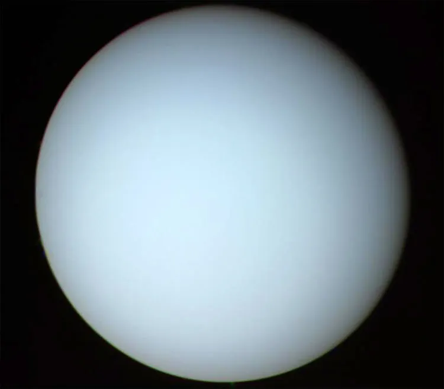

Uranus is the seventh planet from the Sun and is classified as an ice giant. It is much larger than Earth but smaller than Jupiter and Saturn. Uranus has a diameter of about 50,724 kilometers. The planet has a pale blue-green appearance because methane in its upper atmosphere absorbs much of the red light from sunlight.
Uranus has an atmosphere composed mainly of hydrogen and helium, with methane making up a smaller but important portion. Methane gives Uranus its blue-green color. Uranus has some of the coldest atmospheric temperatures in the Solar System, with temperatures near the cloud tops dropping to around -224°C (-371°F).
Uranus does not have a solid surface. Beneath its atmosphere is a thick layer of hot, dense material containing water, ammonia, and methane. Because these substances exist under enormous pressure, they behave very differently from their familiar forms on Earth. Uranus is called an ice giant because these materials make up a much larger portion of its interior than they do in gas giants like Jupiter and Saturn.